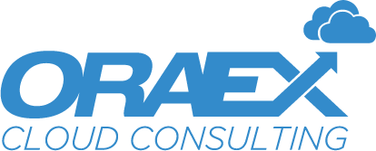

<section class="parceiros" id="parceiros">
    <div class="container">

        <h2>Nossos Parceiros</h2>

        <div class="partner-card">

            <div class="card">
                <div class="logo">
                    
                    <a href="https://oraex.com.br/" target="_blank" class="btn">Saiba mais</a>
                </div>

                <div class="content">
                    <p>
                        A ORAEX Cloud Consulting é uma consultoria voltada à modernização e otimização de processos,
                        recursos e aplicações da infraestrutura e governança de TI. Também atua na gestão e
                        implementação de novas tecnologias que objetivam dar sustentação para esses ambientes.

                        Operando desde 2012, a ORAEX soma casos de sucesso no mercado nacional e internacional. Com
                        inovação e eficiência, converteu uma iniciativa local de
                    </p>
                    <p>
                        especialistas renomados em uma organização global, alinhada às estratégias de comunicação e
                        conexão que permitem uma resposta rápida aos seus clientes.

                        Seu propósito é orientado à transformação exponencial da eficiência operacional por meio da
                        competência e comprometimento do seu trabalho. Conta com uma equipe de profissionais que
                        combinam conhecimento e experiência para fornecer as soluções mais adequadas às necessidades de
                        cada organização, nos mais diversos segmentos.
                    </p>
                </div>
            </div>

            <div class="card">
                <div class="logo">
                    
                    <a href="https://memora.com.br/" target="_blank" class="btn">Saiba mais</a>
                </div>

                <div class="content">
                    <p>
                        Com sede em Brasília, a Memora ajuda empresas a integrar tecnologia, gestão e analytics,
                        revolucionando a experiência do cliente e agilizando o processo de tomada de decisões nas
                        organizações.

                        Com profissionais de diversas áreas de conhecimento, focados na tecnologia, gestão e na
                        inovação, buscamos entender as necessidades do cliente e oferecer soluções personalizadas e com
                        alto valor agregado. Tornando os nossos clientes altamente competitivos e prontos para enfrentar
                        os mercados altamente competitivos.
                    </p>
                    <p>
                        Com uma expertise de mais de 18 anos, possui a competência técnica e a visão inovadora
                        necessária para incrementar o poder e a capacidade organizacional dos seus clientes.

                        A Memora tem construído um histórico de relação com o mercado que envolve mais de 200 casos de
                        sucesso e recebeu, neste tempo de atuação, vários prêmios nacionais e internacionais, destacando
                        a performance da empresa. Entre elas, a certificação internacional Great Place To Work, sendo
                        considerada um ótimo local para trabalhar.
                    </p>
                </div>
            </div>

            <div class="card">
                <div class="logo">
                    
                    <a href="https://www.vaexpert.com.br/" target="_blank" class="btn">Saiba mais</a>
                </div>

                <div class="content">
                    <p>
                        A VA fornece o que as empresas querem e precisam para estarem alinhadas às novidades do mundo do
                        trabalho que permitem extrair o máximo de performance e produtividade. Transformação digital é a
                        mudança cultural que permite organizações atuarem com a melhor tecnologia de ponta a ponta, do
                        nível operacional ao estratégico.

                        A empresa, especialista em ServiceNow, atende clientes dos mais variados segmentos de mercado
                        como, financeiro, alimentício, automobilístico e tecnologia. A equipe de profissionais
                        especializados
                    </p>
                    <p>
                        garante a qualidade e excelência dos serviços prestados.

                        A satisfação dos clientes é confirmada pela expansão internacional da empresa que atua no
                        Brasil, Colômbia, México e Estados Unidos.

                        Conta com certificação CSA, que garante a qualidade do produto e seu comprometimento com
                        segurança e sustentabilidade. Com a CIS-ITSM, certificação que demonstra conhecimento de
                        excelência para aproveitar completamente o potencial da plataforma ServiceNow, sua maior
                        especialidade.
                    </p>
                </div>
            </div>

        </div>

    </div>
</section>